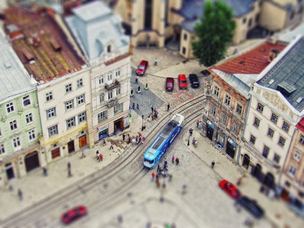

ПІШОХІДНА ЕКСКУРСІЯ ДАХИ ЛЬВОВА
ВАРТІСТЬ: ДОРОСЛИЙ - 100 ГРН, ДИTИНА - 80 ГРН
ТРИВАЛІСТЬ ЕКСКУРСІЇ: 2 ГОД.
Чому треба відвідати пішохідну оглядову екскурсію “Дахи Львова”?
Шановні львів‘яни та гості міста, гречно запрошуємо Вас на екскурсію по Львову, щоб познайомитися зі містом з висоти пташиного польоту! Завітайте до нас та отримайте чудову нагоду побувати на найцікавіших та наймиловидніших львівських дахах. Ми гарантуємо Вам не лише приємні враження від цієї маленької мандрівки містом Лева, але й неповторний колорит та нетиповість самої екскурсії.
Ви разом з досвідченим та цікавим гідомекскурсоводом відвідаєте ТОП-6 дахів Львова, почуєте безліч веселих та казусних історій про відомих львівських панянок та панів, побачите і на власні вуха почуєте львівський БігБен, познайомитеся з хранителем таємниць Львова, побуваєте в гостях львівського Бургомістра, розпізнаєте найстаріші львівські будинки, проникнете на романтичні львівські дахи та побачите зовсім інший, нетиповий Львів та зробите дивовижні фото.
Якщо Ви готові долати безліч сходинок та крутих підйомів, налаштовані на максимальне отримання захвату та адреналіну, прагнете відкрити для себе зовсім інший світ Львова, тоді Вам саме до нас!
Де і коли?
Вартість екскурсії в збірній групі (дорослий/дитячий) — 100/80 грн.
Екскурсія проводиться у п’ятницю, суботу та неділю.
Вартість індивідуальної екскурсії — 500 грн. (для кількості від 1 до 5 осіб)*.
Тривалість екскурсії — 2 год.
Час і місце зустрічі — 13:00, площа Ринок, 19 (офіс у внутрішньому дворику).
Вхідний квиток: Ратуша — 30 грн/дор., 10 грн/дит. (до 14 р.)
* В період травневих та новорічно-різдвяних свят може змінитись .
ДЛЯ ЗАМОВЛЕННЯ ЕКСКУРСІЇ ДЗВОНІТЬ ЗА ТЕЛ: +38 (067) 243-26-26